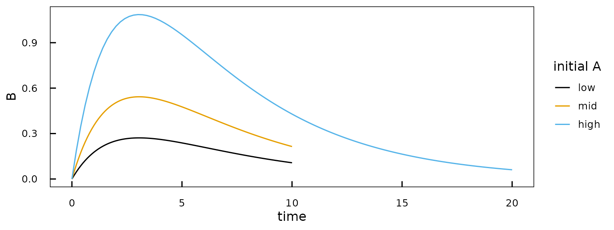

An experiment is a set of conditions: one model at different initial
values, doses or parameters. solveODEBatch()
solves all conditions of one model in one .Call, on OpenMP
threads with dynamic scheduling and without the R API inside the
parallel region. The results equal those of a serial
solveODE() loop bit for bit, for any thread count.
Model definition
The decay chain, with forward sensitivities and in reverse mode, compiled into one shared object.
eqns <- c(A = "-k1*A", B = "k1*A - k2*B")
parms <- c(A = 1, B = 0, k1 = 0.5, k2 = 0.2)
times <- seq(0, 10, by = 0.1)
chain <- cppODE(eqns, modelname = "g6_chain", compile = FALSE)
chainR <- cppODE(eqns, derivMode = "reverse", modelname = "g6_chainR", compile = FALSE)
compile(chain, chainR, output = "guide6", cores = 2)Solving a batch
conditions is a list of argument lists, one per
condition. An element of a condition overrides the batch-wide argument
of the same name: times, parms,
tangent, hessian, cotangent,
curvature, fixed, forcings, the
tolerances and step limits, keepStore, store,
sensErrCon, adjoint, maxOrder and
stald, each as in solveODE(). Here
three initial amounts of \(A\), the
last on a longer grid.
conditions <- list(
low = list(parms = c(A = 0.5, B = 0, k1 = 0.5, k2 = 0.2)),
mid = list(parms = c(A = 1, B = 0, k1 = 0.5, k2 = 0.2)),
high = list(parms = c(A = 2, B = 0, k1 = 0.5, k2 = 0.2), times = seq(0, 20, by = 0.2)))
batch <- solveODEBatch(chain, conditions, times = times, cores = 2)
names(batch)
#> [1] "low" "mid" "high"
attr(batch, "threads")
#> [1] 2Each element is a solveODE() result.
long <- do.call(rbind, lapply(names(batch), function(cn)
cbind(longFormat(batch[[cn]], "B", sens = FALSE), condition = cn)))
long$condition <- factor(long$condition, c("low", "mid", "high"))
ggplot(long, aes(time, value, color = condition)) +
geom_line() +
labs(y = "B", color = "initial A")
serial <- lapply(conditions, function(cond)
solveODE(chain, if (is.null(cond$times)) times else cond$times, cond$parms))
identical(lapply(batch, `[[`, "tangent"), lapply(serial, `[[`, "tangent"))
#> [1] TRUEfixed restricts the sensitivities per call, without
recompiling.
dimnames(solveODEBatch(chain, conditions, times = times, fixed = c("A", "B"))$low$tangent)[[3]]
#> [1] "k1" "k2"Failed conditions
All conditions run, then onFailure decides:
"stop" (default) raises one error naming the failed
conditions, "warn" and "silent" return the
partial results. $diagnostics holds the return code of each
condition.
limited <- list(ok = list(parms = parms),
bad = list(parms = c(A = 1, B = 0, k1 = 1e8, k2 = 0.2), maxsteps = 10))
res <- solveODEBatch(chain, limited, times = times, onFailure = "warn")
#> Warning: 1 of 2 conditions did not complete: bad
#> Returning partial results.
sapply(res, function(r) r$diagnostics$return_code)
#> ok bad
#> 0 -1
res$bad$diagnostics$message
#> [1] "Maximum number of steps exceeded (10)."traceFile writes the step trace of each condition, for a
model built with stepTrace = TRUE.
Threads and BLAS
cores sets the thread count. The default is the first of
getOption("cppDE.cores"), getOption("Ncpus")
and the number of physical cores that is set; cores = 1
forces the serial loop.
| Threads | Value |
|---|---|
| default |
cores, capped at the processor count, also
for fewer conditions (the team persists between calls) |
single condition, enclosing OpenMP region,
fork() child |
one |
| BLAS during a batch | one |
BLAS and OpenMP across fork()
|
one in the child, restored in the parent |
attr(, "threads") reports the count used. batchAvailable()
reports whether a model solves batches in parallel: the batch entry
point, OpenMP in cppDE and OpenMP in the shared object of the model. forkGuard() reports
the BLAS whose thread count cppDE steers, so that a threaded BLAS does
not deadlock in a child of parallel::mclapply().
unlist(batchAvailable(chain))
#> symbol openmp modelOpenmp parallel
#> TRUE TRUE TRUE TRUE
str(forkGuard())
#> List of 3
#> $ api : chr "OpenBLAS"
#> $ threads: int 4
#> $ guard : logi TRUEPrepared batches
prepareBatch()
validates and converts the conditions once. solveBatch() then
takes new numbers per condition, matched by position:
parms, tangent, hessian,
cotangent, curvature, adjoint and
store, each a list with one element per condition and of
the prepared shape. Times, tolerances and every other argument need a
new prepareBatch(), here also the grid of the third
condition.
A fit of \(k_1\) and \(k_2\), shared by the three conditions, to noisy readings of \(B\):
set.seed(2)
tdata <- 0:10
data <- lapply(batch, function(r)
r$variable[match(tdata, r$time), "B"] + rnorm(length(tdata), sd = 0.01))
x0 <- lapply(conditions, function(cond) cond$parms[c("A", "B")])
h <- prepareBatch(chain, lapply(conditions, `[`, "parms"), times = tdata)
objective <- function(k) {
sol <- solveBatch(h, parms = lapply(x0, c, k), cores = 2)
res <- Map(function(r, d) r$variable[, "B"] - d, sol, data)
grad <- Reduce(`+`, Map(function(r, e) 2 * colSums(e * r$tangent[, "B", names(k)]), sol, res))
structure(sum(unlist(res)^2), gradient = grad)
}
fit <- optim(c(k1 = 1, k2 = 0.1), function(k) objective(k),
function(k) attr(objective(k), "gradient"), method = "BFGS")
fit$par
#> k1 k2
#> 0.4971094 0.1987894
fit$convergence
#> [1] 0Reverse mode in a batch
A reverse-mode model takes one cotangent per condition. With
keepStore = TRUE the forward passes keep their checkpoints;
a prepared batch then runs the backward sweeps alone, from the stores
and new cotangents. The gradient of the objective at the start values of
the fit, from the residuals as cotangents:
k0 <- c(k1 = 1, k2 = 0.1)
atK0 <- lapply(x0, function(x) list(parms = c(x, k0)))
fwd <- solveODEBatch(chainR, lapply(atK0, c, keepStore = TRUE), times = tdata)
cotangent <- Map(function(r, d) cbind(A = 0, B = 2 * (r$variable[, "B"] - d)), fwd, data)
hr <- prepareBatch(chainR, atK0, times = tdata, cotangent = cotangent[[1]])
sweep <- solveBatch(hr, cotangent = cotangent, store = lapply(fwd, `[[`, "store"))
Reduce(`+`, lapply(sweep, function(r) r$cotangent[c("k1", "k2"), 1]))
#> k1 k2
#> 1.058904 -50.677950
attr(objective(k0), "gradient")
#> k1 k2
#> 1.058877 -50.678081The two agree to the integration tolerance; 4. Reverse mode describes stores and
cotangents. Models from cvode() have the same batch
entry.